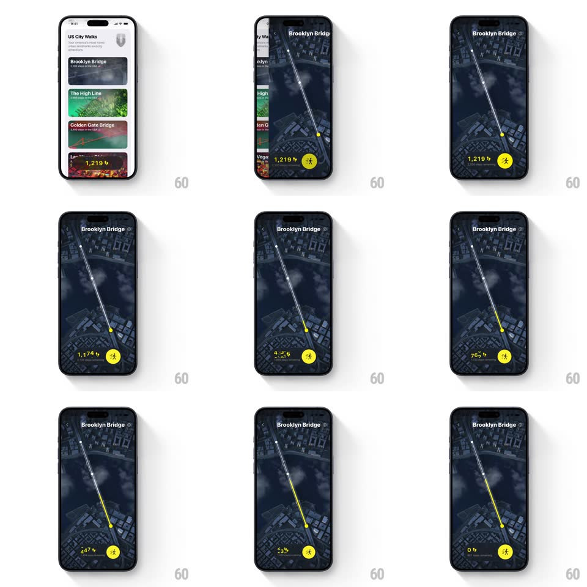

Media
Frame-by-frame

Rebuild this animation 1:1: Walk the World's map path draw - tapping the Brooklyn Bridge card expands into a full-screen night satellite map where a yellow route line draws across the bridge while the step ticker counts down from 1,219 to 0.

Rebuild this animation 1:1: Walk the World's map path draw - tapping the Brooklyn Bridge card expands into a full-screen night satellite map where a yellow route line draws across the bridge while the step ticker counts down from 1,219 to 0. ## Integration Integration: stack-agnostic spec - springs given as stiffness/damping, timed motions as duration + curve; map every value to your framework and animation library of choice. ## Scene US City Walks list (Brooklyn Bridge, The High Line, Golden Gate Bridge cards, one locked card showing "1,219") transitions to a full-screen dark satellite map titled "Brooklyn Bridge": a bright yellow polyline spans the bridge, small waypoint dots mark the route, a step counter sits bottom-left, and a yellow walker button bottom-right. ## Motion spec Pattern: card-expand into path draw, ~1.8s. - Expand: the tapped card's artwork scales up to fill the screen (shared element, 400ms, ease-in-out) as the list fades and the map tiles crossfade in underneath. - Draw: the yellow path draws along the route from start to finish (1.2s, linear along distance), glowing softly, waypoint dots popping in (scale 0 -> 1, spring ~420/18) as the head passes. - Ticker: the step counter counts down 1,219 -> 0 in sync with the path head (same 1.2s, ease-out at the tail). - Settle: the header title fades in (250ms) and the map eases to a slight tilt. ## Calibration - The path head and the ticker stay in sync - 50% drawn means ~610 steps left. - The walker button is static throughout. ## Reduced motion The map fades in with the full path drawn; the ticker shows the final value. ## Don't miss - The shared-element card-to-map expand is the entry - no hard cut. - The path draws over the night-satellite basemap with a soft glow, not a flat stroke.